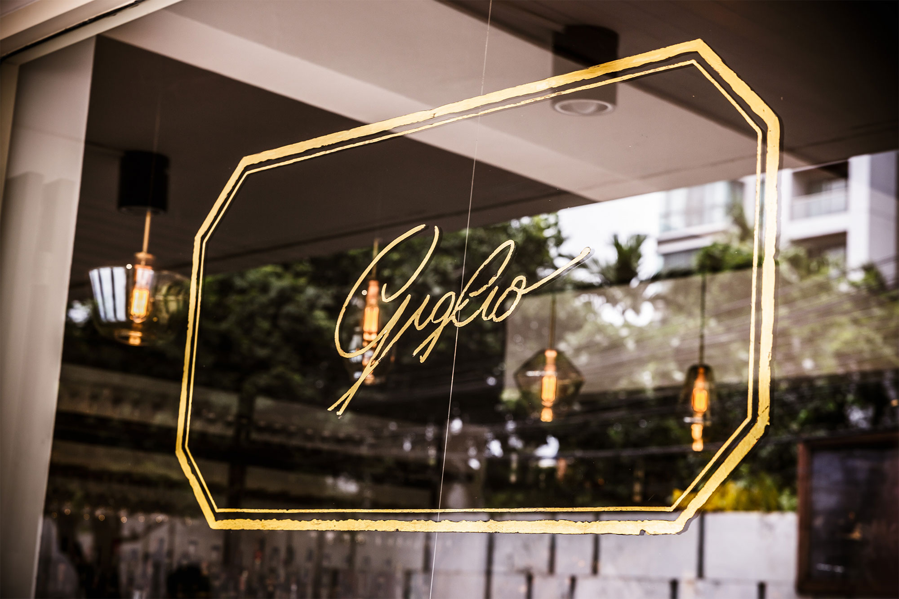

Giglio Trattoria Fiorentina F&B
Brand identity for a restaurant serving authentic Tuscan recipe and wine.
Photography: Farmgroup
Insights
Trattorias in Florence are intimate and effortless. Menus are handwritten. Spaces are filled with images and artefacts.
The symbol of Florence is the red Lily.

Response
We created a pseudo signature and our take on the lily symbol, and added an aged look to the elements.
The signature and the symbol are used with simple geometric frames inspired by the frames on Duomo and Bodoni's Manual of Typography.
